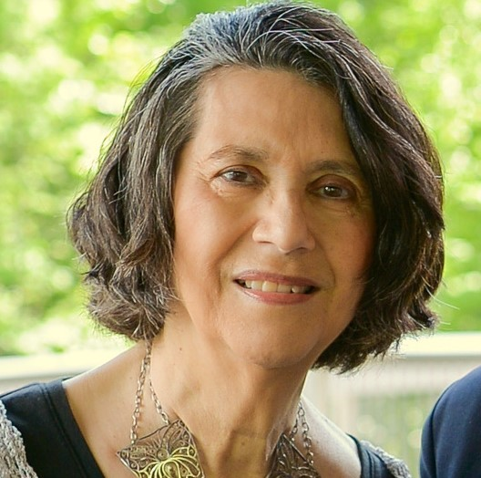
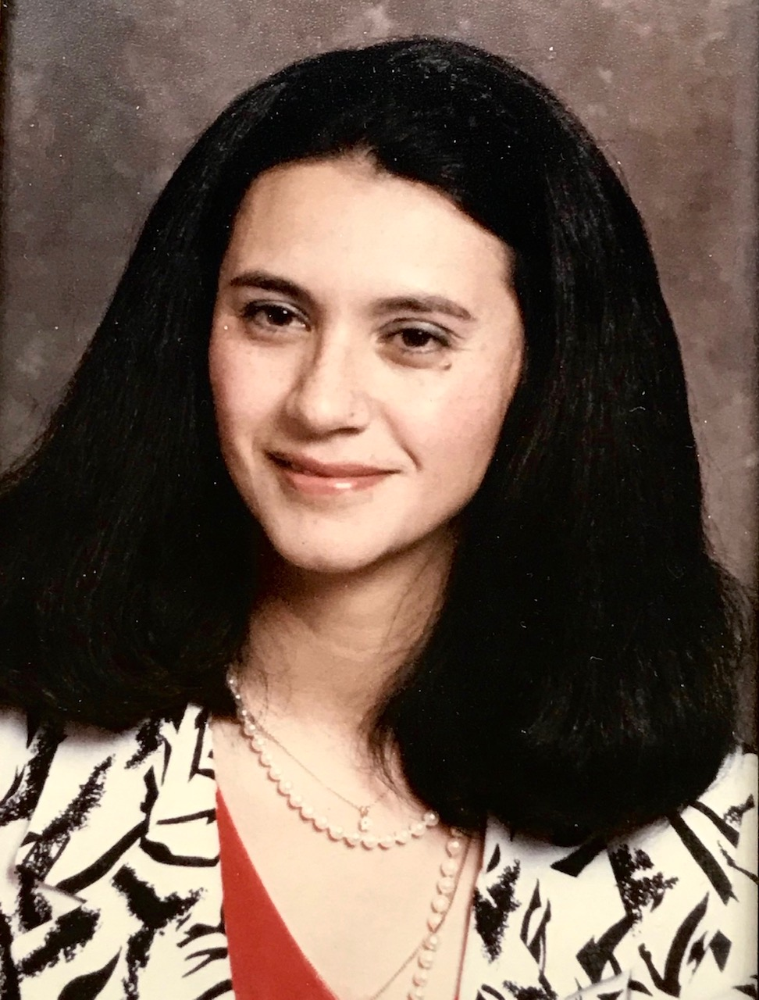
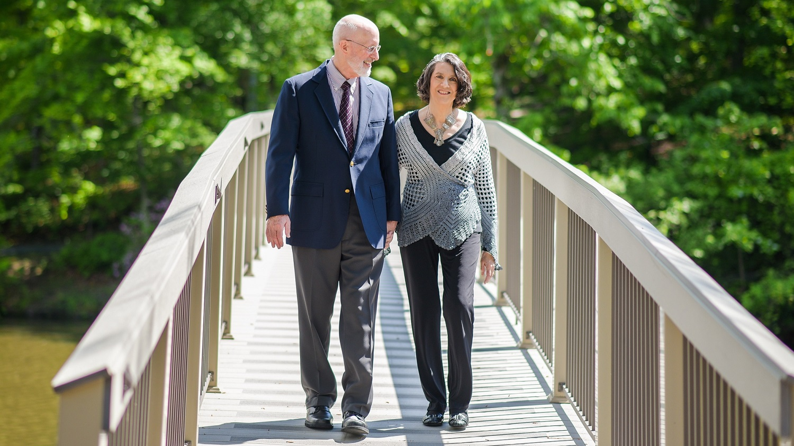

Think of me and smile and laugh,
for it matters not how long we live but how.
I am sorry to leave, but happy to have lived the life I had.
- Marge
Marjorie Bates Leary’s life was filled with love for her family and friends. According to numerous reports received after her death, she was the kindest person that many had ever known and she inspired others by her positive spirit, personal grace, sense of humor, incredible generosity, and steadfast courage in the face of adversity. She faced death as she faced life, as something to confront with honesty and gratitude for all she had experienced. This website has been constructed to honor this wonderful person and the remarkable impact she had on the lives of so many others. Marge’s family appreciates the many notes of condolence and testaments of love that they have received from far and wide.
Additional comments and stories about Marge are still welcome at MargeLearyMemorial@gmail.com.
On Sunday, December 27, 2020, the following picture and obituary appeared in the Richmond Times-Dispatch.
LEARY, Marjorie Bates, 72, of Henrico County, died from pancreatic cancer on December 23, 2020. In anticipating this, Marge wrote: “I want everyone who has known me to focus on the wonderful life I have had, not my death. I was born in San Francisco, CA, on October 16, 1948. My parents were John Howard Bates and Emma Velasco (Bates) Milly. I was lucky to have two big brothers, John (Jack) August Bates (Elsbeth) and Dennis Robert Bates (Gail). Jack and Denny know how much I have loved them, their children (Stephanie Wilk, Yana Bates, and Robin Rosenthal), and their children’s families; and I know they have loved me. I married David Edward Leary on June 11, 1972. I thank David for giving me a wonderful and loving life. We were very fortunate to have three incredible children, Emily Bates Leary Chesnes (Matthew), Elizabeth Bates Leary (Darrell Hazelrig), and Matthew Bates Leary (Ann-Marie). I was also fortunate to marry into a large, loving family, all of whom I have loved in return. Among the joys of my life have been my four grandchildren, Henry Bates Chesnes, Cosette Bates Chesnes, Eleanor (Nora) Evelyn Leary, and Tess Emmaline Leary. I graduated from San José State University. I am so very thankful for the gift of life given to me in 2012, when I received a double-lung transplant that enabled me to spend an additional eight years with David and my family, to be here for the birth of my four grandchildren, to spend time with them, to travel with David, and to have more time with my friends. My friends, and you all know who you are, have given me support, love, and friendship through good times and bad. They all meant so very much to me. Although I say goodbye with sadness at what I will miss, I am joyful and grateful for what I have been able to do and see. I thank you all.”
Marge’s husband writes: “Marge was the greatest lover of people that I have ever known—she loved with an intensity, generosity, and genuineness that is truly rare; and her love extended not just to family and friends, but to friends of friends, doctors and nurses, hairdressers and store clerks, people met in passing. That is why it was so hard at first for her to think of leaving us all (it made her very sad, as she said over and over in those first horrible days), but her greatest consolation was coming to realize (as others already knew) that her love had mattered to so many, and this made all the difference as she faced life’s ultimate challenge with dignity, grace, and courage. She lived each day demonstrating the power and reach of love, and now she will continue to inspire the rest of us to try to do the same. The world would be a better place, by far, if we could do this. All of us know that.”
Because Marge would not want any family member or friend to be exposed to Covid-19, and because her fondest hope was that her young grandchildren might come to know her as they grow up, the family asks, in lieu of a memorial service at this time, that those who wish to celebrate her life and to honor her hope should submit a reminiscence or reflection that will tell her grandchildren, when they grow up, something they should know about their grandmother. (Submit these thoughts to MargeLearyMemorial@gmail.com. If you would like a copy of the collected reminiscences, simply request one at the same address.) You may also post testimonials on Marge’s page at affinityfuneralservice.com/obituaries. Instead of other gifts of remembrance, the family suggests (following Marge’s wish) that donations be made to the Cardiopulmonary Transplant Support Group and Patient Assistance Fund, c/o University of Virginia Health System, P.O. Box 800265, Charlottesville, VA 22908, in recognition of the eight wonderful years that Marge was able to enjoy due to her transplant and exceptional post-operative care.
An online celebration of Marge’s life took place on February 6, 2021. A recording of the event is available below. (There will be a 30-second delay before the video begins after you hit the start arrow.)
To view the video directly on YouTube, click HERE.
written by her husband David Leary and presented in the celebration with pictures.
Marjorie Bates Leary was born in San Francisco, California, on October 16, 1948. Her father, John Howard Bates, whom she loved dearly, became a victim of alcohol, increasingly so over time, leading to the divorce of her parents and causing her to mull over his addiction and its effects throughout her lifetime. She came to a peaceful resolution about her father when she realized, in her last years, that he had loved as best he could and never abused his wife or children, as many alcoholics do. Her mother, Emma Velasco Bates (later Emma Milly), was an amazing woman who provided the template for her life—a wonderful mother and grandmother, a warm and generous friend, an outstanding cook, and the consummate host. She also provided exceptionally well for her children and later married a very good man, Jerome Milly, who was a caring and greatly appreciated grandfather for our three children. Marge had two brothers, Jack and Denny, 10 and 8 years older, who became, if anything, even closer and dearer to her as the years went by. She also had two step-sisters, Marlene Barazoto and Christine Milly. Marge had incredibly detailed memories of her childhood, which she enjoyed immensely despite the pain and discomfort caused by her father’s situation. Barbara Schneider (now Barbara Keating) was a cherished companion once they started their lifelong friendship. Marge loved high school, where she made additional lifelong friends. A student body officer, she could and did sing the Balboa High School fight song, with gusto, up to and including the final months of her life. She went to San José State, where I (then studying for a master’s degree) first encountered her. I was attracted not only by her beauty but even more by the positive, almost bouncing spirit that she conveyed simply walking across campus or talking to someone in the Psychology Department Office. Unknown to me, she read a poster advertising the need for subjects in my study of imagination, and she signed up for it. She then forgot about it, until someone reminded her just before the experimental session was to take place. She scored so high on imagination that I asked my thesis advisor to confirm my scoring, which he did, concluding “Wow!” Soon thereafter I asked if she wanted to go out for coffee—she did—and she reciprocated subsequently with an invitation to dinner. Very soon, without ever specifically discussing it so far as we could recall, we knew we were going to get married, as we did the next year on June 11, 1972. Two years later we headed to Chicago for graduate school. She made lifelong friends there too. When I was unexpectedly offered a job at the University of New Hampshire in 1976, we were going to live separately for a year (other than trips back and forth) as she finished up her graduate study in social work. Without telling me ahead of time, since she knew I would refuse the job if I thought she was giving up her own future career for mine, she dropped out of graduate school at the last minute to accompany me to the East Coast. I’m glad to report that she never regretted it. As the youngest child in her family, Marge had never been around children and didn’t know if she wanted to have any. But when she decided that she did, it was quickly apparent that she would be an extraordinary mother to Emily (born in 1979), Elizabeth (in 1981), and Matthew (in 1984). She was also a surrogate mother or sister to many undergraduate and graduate students who used to come to our home. Some of them remain in touch to this day. And as usual, she subsequently maintained her connection to friends from this period. In 1989 we moved to Virginia when I became the Dean of Arts and Sciences at the University of Richmond. Starting all over again, Marge soon made more friends and helped many faculty members and their spouses feel at home when they came to social get-togethers at the University. Here too, as in New Hampshire, she gave full and unstinting support to my career and to everyone with whom I worked. It was in 1986, in New Hampshire, that Marge first noticed that she got easily winded while walking up even gentle inclines. Her doctor wasn’t concerned, though this seemed odd to us since she was in very good shape otherwise. Then, in 1993, she was diagnosed with a rare lung disorder, LAM (or more specifically, lymphangioleiomyomatosis), which afflicts only women (perhaps only 1,500 in all of North America). We were told then that she probably had only 3-5 years to live. It was the first of many predictions that she would prove wrong. Later in the decade we had to move from a two-story to one-story home when she could no longer go up stairs without considerable difficulty. In the early 2000s, she was still very active, but had to begin using supplemental oxygen, which she needed more and more over time. She then began her long association with the Lung Transplant unit at the University of Virginia, and became a member of the Cardiopulmonary Transplant Support Group, which came to mean so much to her. It wasn’t until May 3, 2012, that Marge received her double-lung transplant at UVA, not long before she may have died without it. Since that time, Marge always referred to May 3 as her re-birthday. Around that date each year, she wrote a letter of gratitude to her donor family, delivered anonymously through a third party. She did not learn who her donor was until just before her death. Our family remains deeply thankful to him and his family for this extraordinary “gift of life,” as Marge called it. Her donor’s picture is now included among the family portraits in the den of our home. Over the years Marge put up with many health issues related at first to her bad lungs and then to various post-transplant conditions. Whether it was pain, loss of taste, neuropathy, lack of balance, intestinal issues, or other matters, she never complained, always seeking to find something that would alleviate the issue while she continued to conduct her life, whenever she could, as if nothing was wrong. She faced her final contest, with pancreatic cancer, in the same way, even though life was further complicated during this time by Covid-related restrictions. During her final eight years of life, Marge enjoyed traveling with me to different places and sometimes by herself up to Brookline, Massachusetts, to visit her dear friend Ronnie Harrington. More continuously, she enjoyed a wide range of contact with her many friends, and reveled in watching our children get married and two of them have children. (I need to add that she loved her children-in-law—Matthew, Darrell, and Ann-Marie—as if they were her very own children.) These were exceptional years, full of family and friendship, including innumerable gatherings with her inner circle of Richmond friends, her dinner club of University of Richmond friends, this and that book club, and the members of the UVA Cardiopulmonary Transplant Support Group. Of course, our four grandchildren, Henry, Nora, Cosette, and Tess, whom she was delighted to live to see, were never far from her mind. You won’t find a more excited, engaged, and adoring grandmother. As if her already wide orbit of family and friends wasn’t enough, Marge had a daily routine that often included visiting this or that store, or doing this or that activity, which brought her into contact with a wide range of acquaintances whom she considered friends, even if she saw them but once a month or once a year. Her daily routine typically involved calling several (or more) friends and doing things around the house in the morning, then having lunch with friends or with me (after I retired), and then being out and about town doing various chores and seeing various people in the afternoon. Except when she had dinner with friends, we invariably ate and spent time together in the evening—though not all evening, since each of us had different things we wanted to do alone, whether reading, or calling someone (in Marge’s case, usually one of our children), or cross-stitching, which she frequently did while semi-watching television. During several of Marge’s recent hospital stays and cancer-treatment sessions, a medical student or nurse would ask her, “What’s the secret of your long marriage?” (It was then 48 years old and counting.) Marge would invariably answer: “First, I love my husband deeply and I know that he loves me. Second, we respect each other, enjoy being together, always thank each other for what we do, and have shared interests; but we also support each other in pursuing activities, on our own, in which we are individually interested.” And so it was, regarding this last point, that I spent a great deal of time over the years preparing to teach, doing administrative work, and conducting research while Marge spent time, when not caring for our family, going to antique stores with friends, being an active participant in various endeavors and groups, and providing the glue that connected her to so many others. In very tangible ways, Marge’s life was enriched by her outside associations and endeavors, including those associated with her bad lungs and then her new lungs. To this list of love, respect, expressions of gratitude, shared enjoyment and interests, and support for each other’s independent concerns as ingredients in a long and happy marriage, she added one time, “We never (or rarely) hold back what we think or feel from one another—and this has helped to dissipate any tension, without ever creating any lasting friction.” I can only agree. Almost everyone listening to this abbreviated narrative of Marge’s life will know that she was a loving, compassionate, loyal, generous, and caring wife, mother, grandmother, sister, relative, and friend, but I want to underscore that she was also smart, tough, courageous, uncomplaining, and unself-seeking. I will give just a few examples, first of how smart she was: After she died, as I was straightening up the house, I counted 15 books of Mensa puzzles, brain teasers, lateral thinking exercises, and the like. She was a whiz at them—just as she could do jumble-word puzzles instantaneously. She just saw the jumbled words correctly, without any cognitive effort. (Always curious, she asked various neurologists over the years how she could do this, but no one could explain it.) Another example of her remarkable intelligence and related memory was her thorough and always up-to-date knowledge of virtually every child of every person she knew. And one final example was provided when she went through her vast collection of jewelry with her daughters, daughter-in-law, and one of her sisters-in-law in the final weeks of her life, telling them the origin of almost every piece. (You won’t know how amazing this is if you don’t know the extraordinary extent of her collection.) And how about toughness and courage and being uncomplaining? Here’s one example from among many: When she was first diagnosed with LAM, no one knew how to treat it, but they tried a medicine that was known to cause depression (as a side effect) when administered in small doses. Well, she received mega-doses for more than 6 years, while serving as the mother of three growing children and the wife of an academic dean. I dare say no one but me and her doctors knew that she was suffering from medically induced depression at times, sometimes quite bad for a week or two. She simply soldiered on, doing her full range of wifely, motherly, and deanly-related duties. She never wanted or asked for sympathy. Similarly, every problem and challenge that she faced—and she faced a good number over her lifetime—she faced straight-on, overcoming most, always ending up a stronger person, and always feeling even more fortunate than before. The other characteristic that I want to emphasize was her unself-centeredness, her genuine humility and even self-deprecation. She felt that she was just an ordinary person doing what any ordinary person would do. Over and over, I would say to her, “That was a very nice thing that you did,” and she would invariably respond, “Oh, anyone would have done that.” My reply was simply, “Well, then, why didn’t someone else do it?” I am very pleased that all the letters, notes, and calls she received in the final months of her life—and thanks to all who sent those communications—brought her to a realization that, in fact, she had done many, many things that others don’t do so readily and agreeably and without any hope or desire for getting credit. I was particularly glad, for her, when she concluded, “I guess I have been a good person.” Finally, as she was dying, I suggested that we could set up a Marjorie Bates Leary Fund at UVA, to which many would want to contribute. Her immediate response was, “Absolutely not!” She didn’t want her name to take precedence over a good cause (namely, the Cardiopulmonary Transplant Support Group and Patient Assistance Fund) to which people should respond for its own sake. She hoped people would give, not because of her, but because the cause itself warranted support. Marge wouldn’t speak of leaving a legacy, but I think all those who knew her will agree that she has in fact left a legacy, of love, caring, and so many other things, which can be summed up rather simply as living life the way we all should live it. It was the greatest privilege and most profound pleasure of my lifetime to be associated with this remarkable human being. I will love her, be grateful to her, and miss her forever.
On May 15, 2021, Marge’s ashes were placed in a niche at the University of Richmond’s Columbarium, which is next to its Cannon Memorial Chapel. (Her niche is to the left of the gate nearest the Columbarium’s fountain.) As part of a private ceremony, the following letter was read aloud by Marge’s husband.
Dear Marge,
I miss you terribly, but I couldn’t be happier as I reflect on the wonderful life that you lived and on the reward that you received for it. That reward was to have become more, to have experienced more, and to have enjoyed more than you ever imagined – or even intended: to be not just someone or something, but to be integral to and instrumental in so many lives, starting with those of your husband and children, and radiating out to your extended families and many, many friends and associates, including all those doctors and nurses who cared for you as you were often, unobtrusively, caring for them.
Your spirit, your joy, your laughter, your exuberance, your love of life, your delight in things big and small will be remembered as long as we live.
You enjoyed collecting sayings that conveyed your philosophy of life. Here is one that I found soon after you died:
“Live the life you’ve always dreamed of. Be fearless in the face of adversity. Never stop learning. Use your imagination whenever possible. Recognize the beauty that surrounds you. Remember where you came from, but never lose sight of where you are going.”
And here’s another, which you cross-stitched in 2017:
“Think Deeply – Speak Gently – Love Much – Laugh Often – Work Hard – Give Freely – Be Kind.”
And to round out your philosophy, I will add “Take Good Care of Those Around You.”
You lived your life according to these principles, each and every day, and we all benefited from it, and we all love and appreciate you for it. I cannot imagine a life more worth living. Not perfect, just better than any of us – including you – could have imagined at the start. You easily exceeded all expectations and all reasonable, even very high standards. As you rightly said, “It matters not how long we live but how.” Amen, my dearest friend and extraordinary wife. Well done!
I will treasure always the many, many memories of our time together – of when we first met and when we got married; of our early life together and then the arrival of our wonderful children; of watching them grow into the such incredible adults, finding spouses whom we have loved, and constructing lives of which we have been justly proud; of the sheer joy of being grandparents; of the simple pleasures of watching movies and enjoying friends together, of traveling, and of the many quiet times as we talked or read, held hands or simply sat next to one another before the fire, perfectly content in each other’s presence. None of these things would have happened, and certainly not as well as they did, without you. I love you all the more for these and countless other gifts of memory that will remain forever.
As long as I live, I will recall those last words that you spoke to me. And I want them to be the last words that I say to you now in this short tribute: As your loving, fortunate, and grateful husband, I say, simply, “Thank you! I love you!” now and always.
Your David